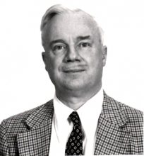

Please note: the AAS Obituaries are temporarily being hosted on this website while their full content is being ingested into the PubPub publishing platform newly adopted by the Bulletin of the American Astronomical Society. When the migration is complete, your existing links will take you to the final, migrated content. Contact peter.williams@aas.org with any questions.
Roy Henry Garstang (1925-2009)
Roy Henry Garstang 84 passed away on November 1, 2009 in Boulder Colorado. He was born in Southport, England in September of 1925 to Percy Brocklehurst and Eunice (Gledhill) Garstang. He won a scholarship to Caius College in Cambridge University. Because it was wartime, he could spend only two years at his studies. However, he managed to complete three years of required work during that time, and then spent 1945-46 as a Junior Scientific Officer at the Royal Aircraft Establishment at Farnborough. He received his BA in 1946 from Cambridge, his MA in 1950, and his PhD in Mathematics in 1954, with a thesis: “Atomic Transitions in Astrophysics,” working under D. R. Hartree. He also received a ScD from Cambridge in Physics and Chemistry in 1983. He married Ann in August 1959. She and two daughters, Jennifer and Susan, survive him.
While still pursuing his PhD, Roy Garstang served as a Research Associate at the Yerkes Observatory, from 1951–1952, working under Subrahmanyan Chandrasekhar. During that time he continued with his own calculations of atomic structure and transition probabilities, although these were not part of Chandra’s research interests. After earning his PhD, he went to teach at the University of London, where he also served as the Assistant Director of the University of London Observatory (1959-1964). He was editor of “The Observatory” Magazine form 1953-1960.
The continuing theme of this research was to help meet the needs of astrophysicists for atomic data. In 1964, he left England for the United States, where he joined the faculty at the University of Colorado, Boulder, where he would remain for the rest of his professional career. It was entirely fitting, considering his interest in performing calculations of interest to astrophysicists, that soon after arriving in Boulder he was appointed Chairman of JILA - Joint Institute for Laboratory Astrophysics (1966-1967). He was Director of the Division of Physics and AstroGeophysics (1979-80), acting Director of the Fiske Planetarium (1980-81), Chair of the Faculty Assembly (1988-1989) and recipient of the Faculty Assembly Excellence in Service Award in 1990. During his career Garstang was active in a number of professional organizations, including the British Astronomical Association (two-term Vice President) and Sigma Xi for which he was the Secretary of the University of Colorado for 20 years. He was a Fellow of the American Association for the Advancement of Science, the American Physical Society the American Physical Society, the Optical Society of America, the Royal Astronomical Society, the Institute of Physics (British), the Royal Statistical Society, and the Cambridge Philosophical Society. He published more than 150 articles in scientific journals.
Roy Garstang was the consummate resource for atomic calculations needed by the astrophysical community. His first scientific paper published when he was a graduate student in 1950 was “Some line strengths for ionized neon” (Monthly Notices of the Royal Astronomical Society 110: 612-614) and some 55 papers later, in 1981 he published calculations on neutral technetium “Oscillator strengths for neutral technetium” (PASP 93:641. 1981). A continuing interest of his was forbidden transitions, such as are important in the solar corona, aurora, planetary nebula, and nova shells. He made important calculations of the energy levels and spectra of highly ionized species of iron and worked extensively on magnetic quadrupole radiation, which proved to be important in the solar corona. Garstang also studied the effects of strong magnetic field on atomic spectra, ranging from the thousand gauss fields of sunspots to megagauss fields of white dwarfs.
He was internationally recognized for his work on light pollution, which turned into a major course change for him, becoming his primary research interest after 1984. Between 1984 and 2007, he published 40 scientific papers of which 37 concerned sky brightness in one way or another. He constructed and modified a light pollution model (Dust and Light Pollution, PASP 103:1109 (1991)) which included an ozone layer, scattering of light by molecules and aerosols with improved variations with altitude, curvature of the earth, and a dust layer of dust either volcanic or desert origin. His models have become the standard for the field and have successfully reproduced the variation of sky glow with position in the sky and with distance from light sources. His models raised awareness of the factors contributing to light pollution at observatory sites and led to efforts to reduce urban light pollution.
Garstang played an important role in the teaching program of the CU Bolder Astrophysics and Planetary Science department, teaching large introductory classes, laboratory and observatory sessions as well as upper division classes and graduate classes. His appetite for teaching undergraduate can be appreciated by some of the laboratory exercise he invented such as measuring the solar constant by the rate of rise of temperature inside closed car (“How hot does your parked car become?” AAPT Announce 18:139 (1988)).
In 1994 he published a letter in AmJPh about a continuing discussion of SI units. The letter reveals much about his approach to life and physics.
“I have done a lot of work during the last 15 years on light pollution. If you want to reach lighting engineers you have to talk about lumens, lux, foot-candles, and whatever. If you do not, your reward is simply not to be understood. Photons per square meter per second per steradian means nothing to them. The problem is doubly compounded because astronomers have their own traditional units, such as number of tenth magnitude stars per square degree, magnitudes per square arc second, and so on, which are equally obscure to the engineering community. By all means work in metric, but be prepared to quote your main results in language understood by the consumers of your results. In fact, a little common sense is what we need.”
Obituary written by: J. McKim Malville (University of Colorado)
BAAS Citation: BAAS, 2011, 43, 012
SAO/NASA ADS Bibcode: 2011BAAS...43..012M